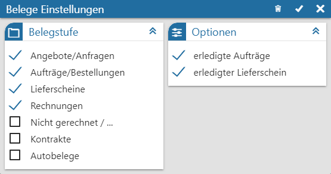
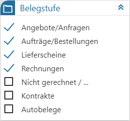
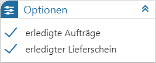

In dem Fenster "Belege Einstellungen" können weitere Einstellungen für die Darstellung des Objekts "Belege" getroffen werden.

Folgende Einstellungen stehen zur Verfügung:
Belegstufe

Ø Auswahl Belegstufe
In diesem Bereich kann definiert werden, welche Belegstufen in der View 360 angezeigt werden sollen.
Optionen

Ø erledigte Aufträge
Wird ein Auftrag / Bestellung direkt in eine Rechnung gewandelt, so existiert gemäß Datenbank nur ein Beleg, welcher beide Daten (Vorstufe und Rechnung) enthält. Durch Aktivierung der Option "erledigte Aufträge" wird der erledigte Beleg ebenfalls in der View 360 dargestellt.
Ø erledigte Lieferscheine
Wird ein Lieferschein in eine Rechnung gewandelt, so existiert gemäß Datenbank nur ein Beleg, welcher beide Daten (Vorstufe und Rechnung) enthält. Durch Aktivierung der Option "erledigte Lieferscheine" wird der erledigte Beleg ebenfalls in der View 360 dargestellt.
Buttons
Ø Initialisierung
Durch Anwahl dieses Buttons werden die Einstellungen des Fensters auf den Standard zurückgesetzt.
Ø Speichern
Durch Anwahl des Buttons "Speichern" werden die Beleg-Einstellungen gespeichert und das Fenster geschlossen.
Ø Ende
Durch Anwahl des Buttons "Ende" wird das Einstellungsfenster geschlossen und nicht gespeicherte Änderungen verworfen.